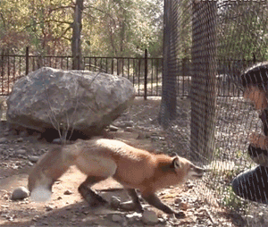

"Dis moi ce qui te passionne...
La musique
Du classique au rock en passant par le rap, le gnaoua, la techno, le jazz, le blues, le reggae et le chaabi : je sais apprécier presque tous les genres musicaux. Véritable mélomane depuis mes plus jeunes années, j'ai finalement investi mon temps dans la pratique du chant et de la guitare.
L'humain
J’aime donner la parole aux autres, les écouter et me projetter dans leurs histoires. Mon empathie me pousse constamment à m'identifier à eux, même lorsque leurs idées, valeurs ou opinions divergent complètement des miennes. Même si tout n'est pas acceptable, je considère que presque tout trouve une explication quelque part. Mon seuil de tolérance est particulièrement élevé. Tout comme mon niveau de curiosité.
Les voyages
Mon enfance a été scindée en deux : 9 ans en banlieue parisienne puis 9 ans à Casablanca au Maroc. Née d'une mère algérienne et d'un père marocain, j'ai baigné dans un environnement multiculturel. Constamment à la recherche de nouveaux apprentissages culturels, j'ai choisi de vivre une année au Mexique puis une année à Manchester. Depuis un an, je ne rêve que de repartir vivre dans un nouveau pays.
Les relations internationales
J’aime comprendre les relations entre les états et leurs logiques d’intérêts. Les sciences politiques, les sciences économiques, les sciences sociales et la communication ont toujours été pour moi les meilleures disciplines. L'année dernière, j'ai donc choisi de rejoindre Havas pour une durée d'un an. J'ai travaillé comme consultante en communication d'influence pour le compte de pays étrangers. La meilleure expérience professionnelle que j'ai connu jusque là.
La nature
J'aime à peu près tout ce qui est vivant, à l'exeption des limaces. C'est dégueulasse les limaces. Petite, mon amour pour les chevaux m'a poussé à pratiquer l'équitation sans relache pendant plus de 6 ans (nostalgie). Mais ce n'était pas suffisant. J'ai donc choisi d'adopter. Mais une vingtaine d'animaux décédés ou disparus dans des circonstances non elucidées plus tard, j'ai décidé d'arrêter. RIP to you all. Chiens, chats, poule, lapins, lézard, caméléon, hamster, oiseaux, cochon d'inde, tortues. Ah si mes tortues sont toujours bien vivantes. C'est increvable les tortues. J'aime les fleurs aussi, surtout les coquelicots. Fleur sauvage. Comme moi.
... je te choisirai une vocation."

